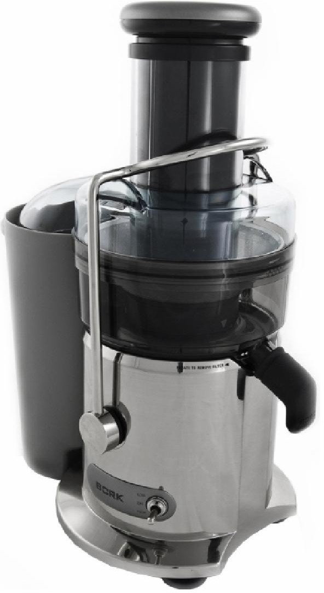

Соковыжиматель BORK S511
Технические характеристики
Мощность: 950Вт
Количество оборотов: 6500-13000 об/мин
Количество скоростей: 2
Объём кувшина для сока: 1.0 л
Объём контейнера для жмыха: 2.6 л
Вес прибора: 4.31 кг
Габариты прибора: 42x21x43 см
Срок гарантии: 1 год
Материал корпуса: пластик
Цвет: серебристый
Особенности
Микроячеистый фильтр
Стальные ножи / Стальные ножи с покрытием нитрида титана
Электронная защита от перегрузки
Съёмный кувшин для сока с пеносепаратором
Съёмный контейнер для мякоти
Плавный запуск двигателя
Дополнительная информация
- 3-х позиционный переключатель
- Автоматический выброс мякоти
- Идеально сбалансированный двигатель
- Колоссальная центробежная сила, создаваемая мощным двигателем прибора, обеспечивает вращение фильтра со скоростью 6500-13000 оборотов в минуту
- Широкий загрузочный лоток для продуктов диаметром 75 мм
- Система включения устройства не позволит соковыжималке работать, если она неправильно собрана, что гарантирует безопасность и заявленные эксплуатационные характеристики
- Щётка для очистки в комплекте